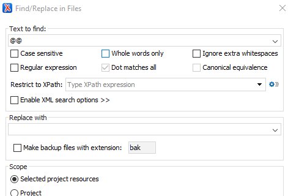
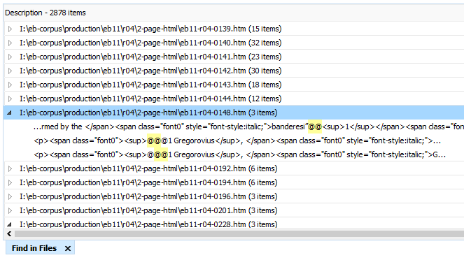
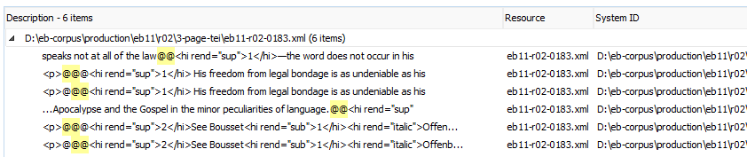

Check Footnote Coding 1
Use a simple search to check if you have the right number of note codes on all pages.
Footnotes have two elements:
- the footnote "anchor" in the main body of the text, which is usually a superscript number, such as 1.
- the footnote "text block," which on a printed page would appear at the bottom, preceded by the superscripted number corresponding to the anchor.
We check for two common problems with footnote formatting in the TEI
page files before converting them into entry files.
- are there the same number of anchors and text blocks on every page?
- are all footnote text blocks at the end of the page?
- Open the xml-project.
- In the Project window, right-click the 3-pagestei folder containing your files, and select Find/Replace in Files.
-
The Find/Replace in Files window opens. Enter
@@in the Text to find field and click Find all at the bottom of the window.Figure 1. The Find/Replace in Files window 
-
Matches appear in the Results View, with the search term
highlighted.
Figure 2. The Find in Files window showing search results 
Test 1: Check for the correct number of footnote anchors and text blocks:
-
Look at the example above of a page with a single footnote anchor and the
corresponding footnote text block. This is typical for every page with one
footnote. Why does the same footnote text, with three
@symbols, appear twice? Because we are searching for two@symbols, rather than three, and the search counts both the first pair and the second pair as valid results. - Now look at the line with the file information. It lists the results as "(3 items)" in that file. Every file with one footnote will produce three items. Files with two notes produce six items. If the notes are coded correctly, the number of items in the file will always be a multiple of three.
Test 2: Check for the correct placement of footnote text blocks:
-
The note anchors
@@should all occur first in the results list, followed by the note text blocks@@@.Click the Location header on the far right of the Find in Files window to sort results by their location in the file.You only need to check the sequencing in files with more than one note, marked as six or more items in the file.
Figure 3. Search results showing footnotes correctly sequenced 
-
If notes were not output at the end of the page, you will see
@@@in the middle of the sequence of@@codes. In the following example, the first footnote text block is followed by the second footnote anchor and its text block. It should follow the second anchor, as in the example above.Figure 4. Search results showing footnote errors 
Testing Procedure:
- Go through the search results carefully, checking that (a) the number of items in each file is a multiple of 3; and (b) that all footnote text blocks occur at the end of the list.
-
Make corrections directly in the TEI
page file. Resolve extra or missing
@codes, and move footnote text blocks to the end of the page, in the correct sequence. - Make a note in the inventory file for the section indicating the problem with footnote coding on the page, stating it was fixed in the TEI page file.